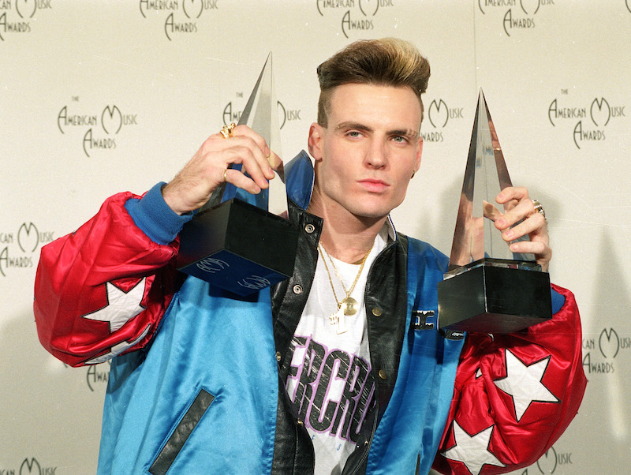

<div class="heading-area">
  <h2 class="heading--title">Comparative Blend Modes:</h2>
</div>

<div class="live-code-area edit--comparative" style="margin-top: 1em">
  <div class="img-area">
    <div class="images blend--comparative">
      <div class="background fragment">
        
      </div>
      <div class="active fragment">
        
      </div>
    </div>
  </div>

  <div class="style-box-area">
  <style class="code-editor" contenteditable>.blend--comparative .active {
// mix-blend-mode: difference;
// mix-blend-mode: exclusion;
}</style>
  <button class="btn--overlap">Overlap Images</button>
  </div>

<aside class="notes">
  hue-rotate()
</aside>
